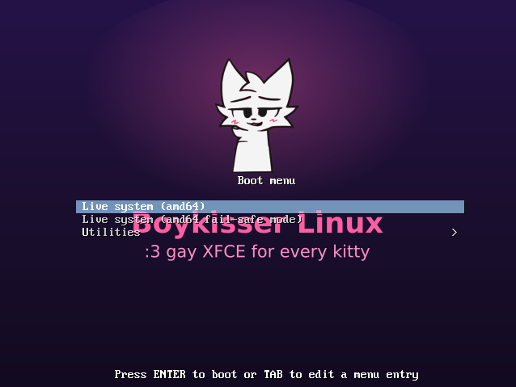
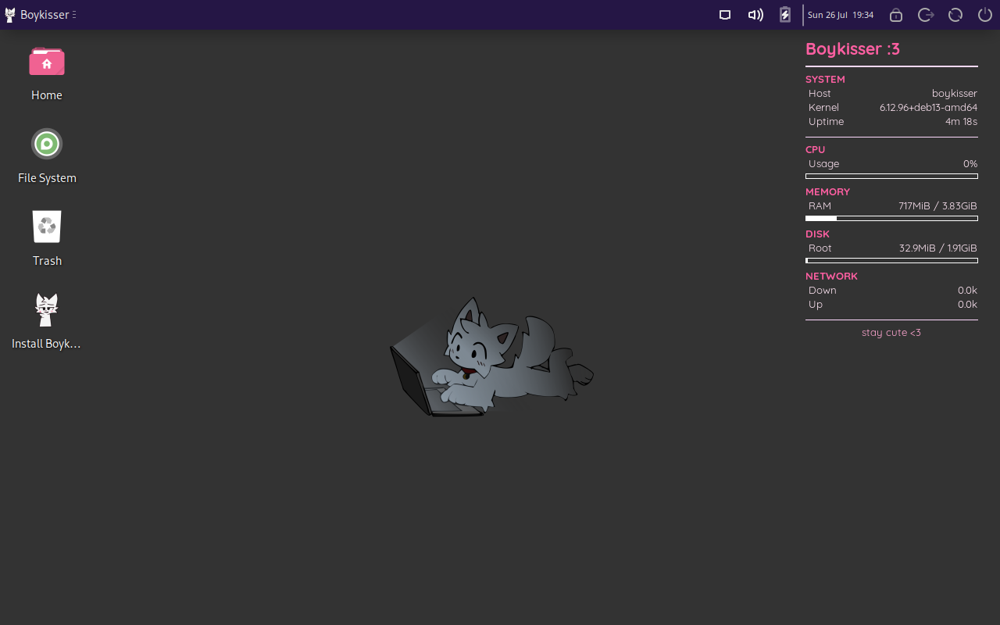
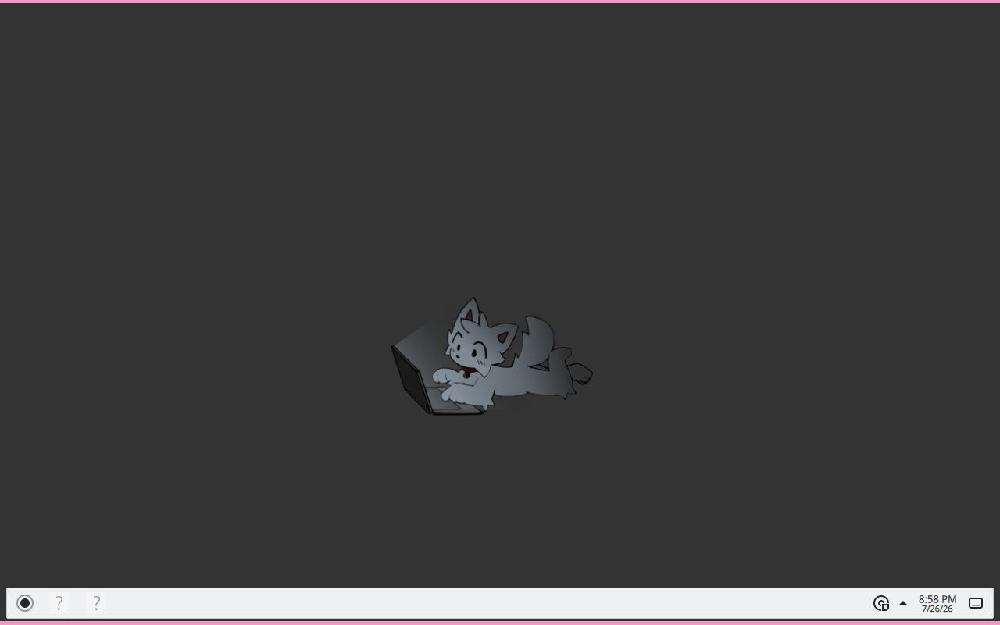
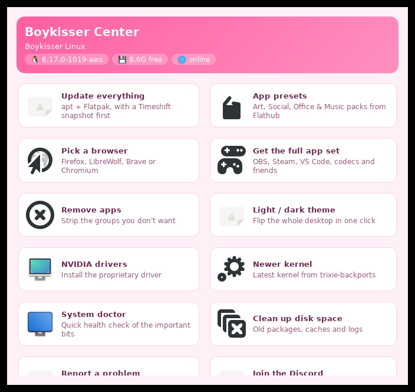

It's Debian 13 with XFCE, themed pink from the boot menu all the way to the login screen. Flatpak and Flathub are already set up before you ever log in, Steam and OBS work, and there's a normal one-button installer when you're ready to keep it. Gaming, streaming, coding, homework - it's an allrounder, not a toy.
Prefer KDE Plasma? The installer lets you pick it - and it can pull in optional app bundles for gaming, streaming, development or office work while it's at it.
I made it because I wanted a daily driver that looked like me and didn't get in my way. Hobby project, one person, the odd rough edge - but it's plain Debian under the paint, nothing cursed.
What it looks like
{kind=link}

{kind=link}

{kind=link}

{kind=link}

The wallpapers
All six ship with the ISO (boykisser wallpaper cycles them) - served straight from the repo, so they're always the current set.
What's already set up
The whole pink look
Themed XFCE with Tela-circle icons, a Boykisser start button, custom Plymouth splash and a matching GRUB menu. One toggle flips the desktop between light and dark.
Games run
Steam, Heroic, GameMode and MangoHud in the image, with 32-bit libraries turned on so your library actually launches instead of sulking.
Made for recording
OBS Studio ships with a working virtual camera (v4l2loopback), so streaming, recording, and looking decent on calls all work without the usual fight.
Hardware, broadly
Wide firmware coverage and Nouveau by default so it boots more or less anywhere. NVIDIA card? One-click helper pulls the proprietary driver post-install.
Boykisser Center
One hub for everything: updates with Timeshift snapshots, app presets, browser chooser, de-bloat picker, NVIDIA drivers, newer kernels and a built-in bug reporter.
Private by default
No telemetry, no accounts, no phoning home - it's plain Debian underneath. Firewall on out of the box, automatic security updates, and Flatseal preinstalled so you decide what your apps can see.
Sensible defaults
Zram swap, night light, weekly SSD TRIM, printing and firmware updates - all preconfigured. Boot menu speaks seven languages.
Out of the box you also get:
- Firefox
- VS Code Insiders
- VLC
- GNOME Software
- GParted
- Thunar
...and these land on first boot via Flatpak:
- Discord
- Flatseal
- Gear Lever
Get it
Three flavours: Full (everything offline), Netinstall (slim, downloads heavy apps on first boot), Lite (ancient BIOS laptops - no grub-efi hybrid, nomodeset default).
Every release has a direct mirror + torrent on the Internet Archive.
Flash with dd, boot, run the installer. Need help? Old hardware guide ->